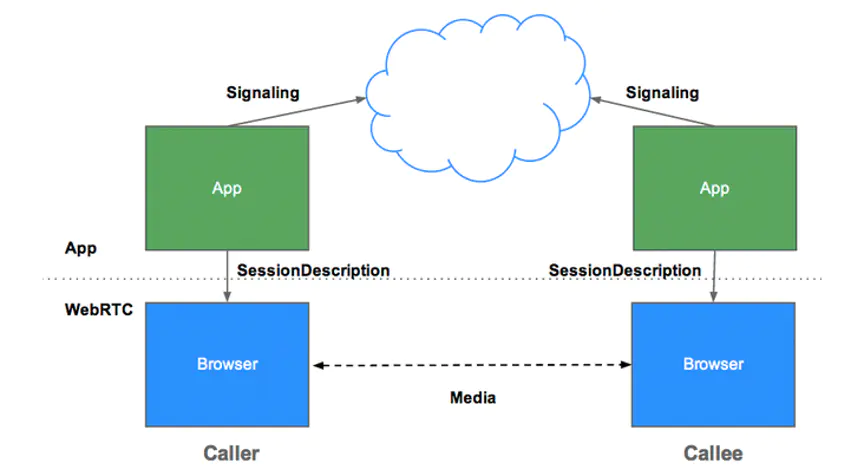
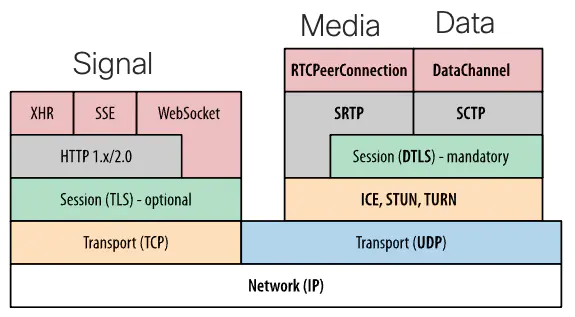
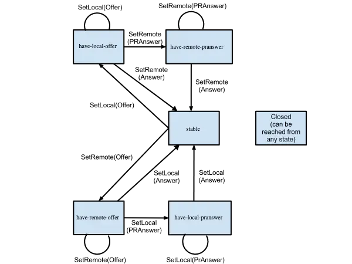
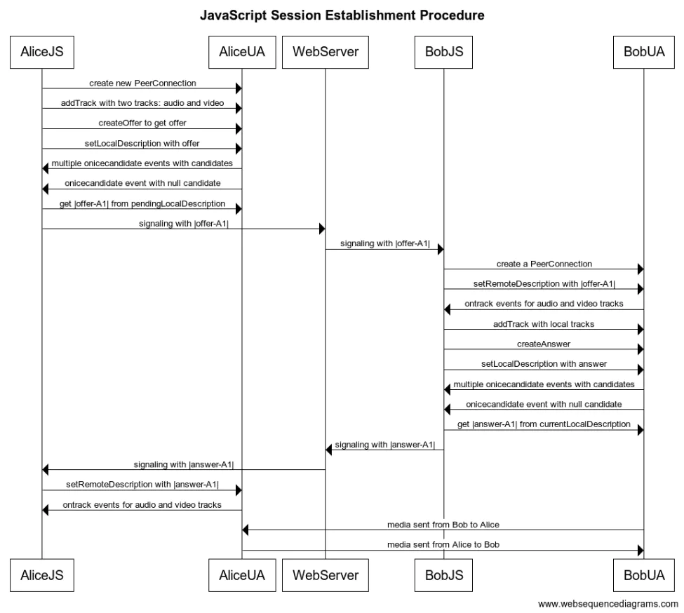
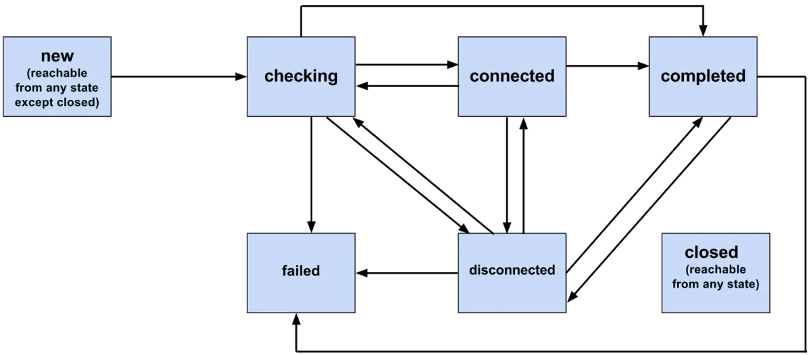
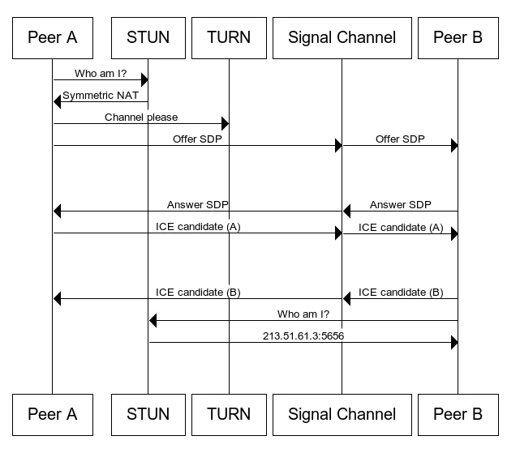
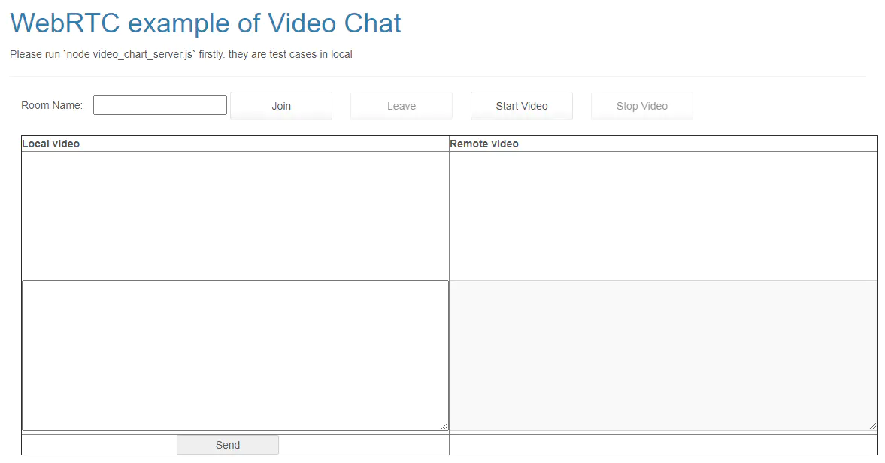
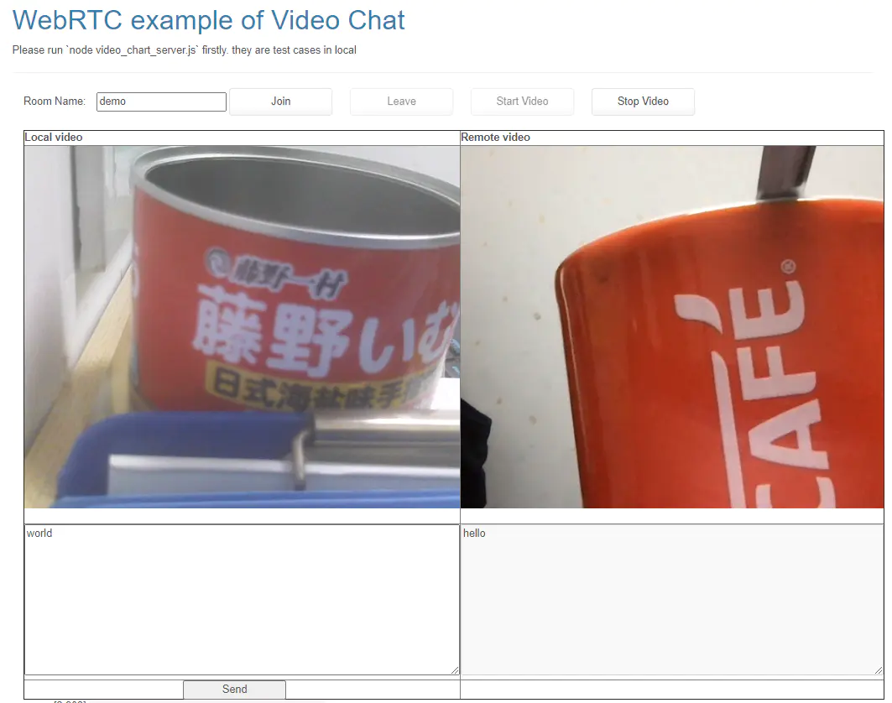

WebRTC 呼叫流程¶
概论¶
WebRTC 是一套基于 Web 的实时通信解决方案，通过浏览器内置的 API 来支持音视频通道的搭建。
简而言之，先在信令通道协商出彼此的媒体和通信参数, 再通过媒体通道来传输音视频媒体数据。这一套媒体会话的搭建流程定义为 “JavaScript Session Establishment Protocol” JavaScript 会话创建协议
WebRTC 的信令，媒体以及数据通道¶
首先看一下 WebRTC 的实体之间的拓扑结构

WebRTC 协议栈如下图所示, 基本上有三个通道需要建立
Signal 信令通道, 可以通过 TCP/TLS + HTTP 和 WebSocket 来传输信令消息
Media 媒体通道, 可以通过 UDP + DTLS/SRTP 来传输媒体
Data 数据通道, 可以通过 UDP + DTLS + SCTP 来传输数据

对于媒体传输层，WebRTC 规定了用 ICE/STUN/TURN 来连通，用 DTLS 来协商 SRTP 密钥，用 SRTP 来传输媒体数据, 用 SCTP 来传输应用数据。
而在信令层，WebRTC 并未指定，各个应用可以用自己喜欢的信令协议来进行媒体协商，一般都是用 SDP 来通过 HTTP, WebSocket 或 SIP 协议承载具体的媒体会话描述。
信令和媒体通道是必需的，数据通道和信令通道可以合并。
会话创建过程(JSEP) 与两个最重要的状态机¶
在客户端即浏览器需要维护两个状态机
信令状态机
通信的双方需要将 SDP 进行交换以了解彼此的媒体通信能力。本地 Local 先创建并设置 SDP Offer, 状态为 “have-local-offer” , 发送给远端(SetRemote),远端服务收到 Offer, 再根据自己的能力结合对方提供的能力,生成一个 SDP answer , 然后发回给对端.于是当对方收到 Answer 并设置给自己的 RTCPeerConnection, 这个状态就会变成 “stable”

具体的交互如下图所示, Alice 要与 Bob 通信就要先交换 SDP, 进行一轮 Offer/Answer 的协商

ICE 连接状态机
信令通道搭建好进行 SDP 媒体能力的协商, 还要进行媒体通道的搭建, 首要的就是要创建好连接,能不能连接需要检查. 也即要将对收集到的候选者对 Candidate-pair 进行检查 “checking”,如果能连通, 最终状态转换为 “connected”

通过 ICE/STUN/TURN 协议，将位于防火墙，准确地来说是 NAT (网络地址转换器) 之后的通信双方连接起来
可以象下面这样在SDP 在携带地址信息(ice-candidate: ip+port)

让我们来举一个具体例子, 客户端初始界面如下:

1. 我们要写一个上面提到的信令服务器, 同时也作为一个网页服务器¶
nodejs 有强大的 express 和 socket.io 库,可以帮助我们轻松实现一个视频聊天服务器。 express 是非常流行的 nodejs Web 框架，它简单易用， socket.io 是一个支持浏览器和服务器之间的实时、双向和基于事件的通信的 JavaScript 库。它包括 nodejs 服务器和Javascript客户端库。
第一步创建 package.json¶
{
"name": "webrtc_primer",
"version": "0.1.0",
"description": "video_chat_demo",
"main": "video_chat_server.js",
"scripts": {
"test": "echo \"Error: no test specified! Configure in package.json\" && exit 1",
"start": "nodemon video_chat_server.js"
},
"repository": {
"type": "git",
"url": "https://github.com/walterfan/webrtc_primer"
},
"keywords": [
"WebRTC"
],
"author": "Simon Pietro Romano",
"license": "BSD",
"dependencies": {
"body-parser": "^1.18.3",
"express": "^4.16.3",
"log4js": "^6.3.0",
"moment": "^2.29.1",
"nc": "^1.0.3",
"node-static": "~0.7.11",
"nodemon": "^1.17.5",
"socket.io": "~3.0.4",
"sqlite3": "^5.0.2",
"webrtc-adapter": "^7.7.0"
},
"bugs": {
"url": "https://github.com/spromano/WebRTC_Book/issues"
},
"homepage": "https://github.com/spromano/WebRTC_Book"
}
第二步： 创建 video_chat_server.js¶
这里我用 express 框架来启动一个web 网页服务器，注意这里需要使用 https 协议。 从安全性考虑，WebRTC是不允许用 http 协议的
首先使用openssl 来生成一个私钥和自签名的证书
openssl req \
-newkey rsa:2048 -nodes -keyout domain.key \
-x509 -days 365 -out domain.crt
你也可以跳过这一步，使用我生成好的。 添加一个文件 video_chat_server.js
const fs = require('fs');
const http = require('http');
const https = require('https');
const bodyParser = require('body-parser');
//const sqlite3 = require('sqlite3');
const moment = require('moment');
const express = require('express');
const path = require('path');
const log4js = require("log4js");
log4js.configure({
appenders: {
'stdout': { type: 'stdout' },
'video_chat': { type: "file", filename: "video_chat.log" }
},
categories: { default: {
appenders: ["stdout","video_chat"],
level: "info" }
}
});
const logger = log4js.getLogger("video_chat");
const options = {
index: "video_chat_demo.html"
};
const httpsPort = 8183;
const certificate = fs.readFileSync('./domain.crt', 'utf8');
const privateKey = fs.readFileSync('./domain.key', 'utf8');
const credentials = {key: privateKey, cert: certificate};
const app = express();
app.use('/', express.static(path.join(__dirname, '/'), options));
const httpsServer = https.createServer(credentials, app);
console.log(`video chart serve on https://localhost:${httpsPort}`);
httpsServer.listen(httpsPort);
第三步：引入 socket.io 库，添加对于客户端连接的管理¶
主要就两件事： 一是把有相同房间名称的参会者的连接加入(join) 到一个房间(room) 二是在参会者之间广播消息
var io = require('socket.io')(httpsServer);
function getParticipantsOfRoom(roomId, namespace) {
var count = 0;
var ns = io.of(namespace||"/"); // the default namespace is "/"
for (let [key, value] of ns.adapter.rooms) {
if(key === roomId) {
count += value.size;
}
}
return count;
}
// Let's start managing connections...
io.sockets.on('connection', function (socket){
// Handle 'message' messages
socket.on('message', function (message) {
log('Server --> got message: ', message);
logger.info('will broadcast message:', message);
// channel-only broadcast...
//socket.broadcast.to(socket.channel).emit('message', message);
socket.broadcast.emit('message', message);
});
// Handle 'create or join' messages
socket.on('create or join', function (room) {
var numClients = getParticipantsOfRoom(room);
log('Server --> Room ' + room + ' has ' + numClients + ' client(s)');
log('Server --> Request to create or join room', room);
// First client joining...
if (numClients == 0){
socket.join(room);
socket.emit('created', room);
logger.info(room + " created: " + numClients);
} else if (numClients == 1) {
// Second client joining...
io.sockets.in(room).emit('join', room);
socket.join(room);
socket.emit('joined', room);
logger.info(room + " joined: " + numClients);
} else { // max two clients
socket.emit('full', room);
logger.info(room + " full: " + numClients);
}
});
function log(){
var array = ["* " + moment().format() + ">>> "];
for (var i = 0; i < arguments.length; i++) {
array.push(arguments[i]);
}
socket.emit('log', array);
}
});
2. 写一个支持视频和文本聊天的网页¶
这个网页就是实现一开始我展示的那个界面
<!DOCTYPE html>
<html xmlns="http://www.w3.org/1999/xhtml">
<!-- 省略一些引入的 js 和 css 文件-->
</head>
<body>
<nav class="navbar navbar-default navbar-static-top">
</nav>
<div class="container">
<div class="row">
<div class="col-lg-12">
<div class="page-header">
<h1>WebRTC example of Video Chat </h1>
<p> Please run `node video_chart_server.js` firstly. they are test cases in local</p>
</div>
<div class="container" id="details">
<div class="row">
<div class="col-lg-12">
<div>
<label>Room Name: </label>
<input type="text" id="roomName"/>
<button class="btn btn-default" autocomplete="off" id="openButton">Join</button>
<button class="btn btn-default" autocomplete="off" id="closeButton">Leave</button>
<button class="btn btn-default" autocomplete="off" id="startButton">Start Video</button>
<button class="btn btn-default" autocomplete="off" id="stopButton">Stop Video</button>
</div>
<br/>
</div>
<div class="col-lg-12">
<div id='mainDiv'>
<table border="1" width="100%">
<tr>
<th>
Local video
</th>
<th>
Remote video
</th>
</tr>
<tr>
<td>
<video id="localVideo" autoplay></video>
</td>
<td>
<video id="remoteVideo" autoplay></video>
</td>
</tr>
<tr>
<td align="center">
<textarea rows="4" cols="60"id="dataChannelSend" disabledplaceholder="This will be enabled once the data channel is up..."></textarea>
</td>
<td align="center">
<textarea rows="4" cols="60"id="dataChannelReceive" disabled></textarea>
</td>
</tr>
<tr>
<td align="center">
<button id="sendButton" disabled>Send</button>
</td>
<td>
</td>
</tr>
</table>
</div>
</div>
</div>
<script type="text/javascript" src="/socket.io/socket.io.js"></script>
<script type="text/javascript" src="js/old_adapter.js"></script>
<script type="text/javascript" src="js/video_chat_client.js"></script>
</body>
</html>
注意我在最后包含的 js 文件 video_chat_client.js ， 这个是我们最主要的代码文件，包含了大部分的逻辑
3. 编写视频聊天的客户端代码，主要就是创建 PeerConnection, 交换 SDP, 通过ICE检查连通性后进行通信¶
关键是
获取本地媒体
async function startMedia() {
try {
// Call getUserMedia()
weblog('Getting user media with constraints: '+ JSON.stringify(constraints));
const stream = await navigator.mediaDevices.getUserMedia(constraints);
handleUserMedia(stream);
} catch (ex) {
handleUserMediaError(ex);
}
}
创建 PeerConnction , 加入本地媒体流
function checkAndStart() {
weblog('checkAndStart: isStarted='+ isStarted + ", isChannelReady=" + isChannelReady);
if (!isStarted && typeof localStream != 'undefined' && isChannelReady) {
createPeerConnection();
pc.addStream(localStream);
isStarted = true;
if (isInitiator) {
doCall();
}
}
}
创建 peerConnection 时, 注意在onaddstream 时将媒体流附着在 video 元素上.
function createPeerConnection() {
try {
pc = new RTCPeerConnection(pc_config, pc_constraints);
pc.onicecandidate = handleIceCandidate;
weblog('Created RTCPeerConnnection with:\n' +
' config: \'' + JSON.stringify(pc_config) + '\';\n' +
' constraints: \'' + JSON.stringify(pc_constraints) + '\'.');
} catch (e) {
weblog('Failed to create PeerConnection, exception: ' + e.message);
alert('Cannot create RTCPeerConnection object.');
return;
}
pc.onaddstream = handleRemoteStreamAdded;
pc.onremovestream = handleRemoteStreamRemoved;
//...
完整代码如下
'use strict';
const startButton = document.getElementById('startButton');
const stopButton = document.getElementById('stopButton');
const openButton = document.getElementById('openButton');
const closeButton = document.getElementById('closeButton');
stopButton.disabled = true;
closeButton.disabled = true;
startButton.addEventListener('click', startMedia);
stopButton.addEventListener('click', closeConnection);
openButton.addEventListener('click', join);
closeButton.addEventListener('click', hangup);
// Should use navigator.mediaDevices.getUserMedia of webrtc adapter
// Clean-up function:
// collect garbage before unloading browser's window
window.onbeforeunload = function(e){
hangup();
}
// Data channel information
var sendChannel, receiveChannel;
var sendButton = document.getElementById("sendButton");
var sendTextarea = document.getElementById("dataChannelSend");
var receiveTextarea = document.getElementById("dataChannelReceive");
// HTML5 <video> elements
var localVideo = document.querySelector('#localVideo');
var remoteVideo = document.querySelector('#remoteVideo');
// Handler associated with 'Send' button
sendButton.onclick = sendData;
// Flags...
var isChannelReady = false;
var isInitiator = false;
var isStarted = false;
// WebRTC data structures
// Streams
var localStream;
var remoteStream;
// Peer Connection
var pc;
// Peer Connection ICE protocol configuration (either Firefox or Chrome)
var pc_config = webrtcDetectedBrowser === 'firefox' ?
{'iceServers':[{'urls':'stun:23.21.150.121'}]} : // IP address
{'iceServers': [{'urls': 'stun:stun.l.google.com:19302'}]};
// Peer Connection contraints: (i) use DTLS; (ii) use data channel
var pc_constraints = {
'optional': [
{'DtlsSrtpKeyAgreement': true},
{'RtpDataChannels': true}
]};
// Session Description Protocol constraints:
// - use both audio and video regardless of what devices are available
//var sdpConstraints = {'mandatory': {
// 'OfferToReceiveAudio':true,
// 'OfferToReceiveVideo':true }};
var sdpConstraints = webrtcDetectedBrowser === 'firefox' ?
{'offerToReceiveAudio':true,'offerToReceiveVideo':true } :
{'mandatory': {'OfferToReceiveAudio':true, 'OfferToReceiveVideo':true }};
/////////////////////////////////////////////
// Set getUserMedia constraints
const constraints = {
audio: false,
video: true
};
var socket = io.connect();
// From this point on, execution proceeds based on asynchronous events...
async function join() {
// Connect to signalling server
var room = document.getElementById("roomName").value;
// Send 'Create or join' message to singnalling server
if (room !== '') {
weblog('Create or join room ' + room);
socket.emit('create or join', room);
}
}
/////////////////////////////////////////////
async function startMedia() {
try {
// Call getUserMedia()
weblog('Getting user media with constraints: '+ JSON.stringify(constraints));
const stream = await navigator.mediaDevices.getUserMedia(constraints);
handleUserMedia(stream);
} catch (ex) {
handleUserMediaError(ex);
}
}
// getUserMedia() handlers...
/////////////////////////////////////////////
function handleUserMedia(stream) {
localStream = stream;
attachMediaStream(localVideo, stream);
weblog('Adding local stream.');
startButton.disabled = true;
stopButton.disabled = false;
sendMessage('got user media');
if (isInitiator) {
checkAndStart();
}
}
function handleUserMediaError(error){
weblog('Erroe getUserMedia error: ' + error);
}
// Server-mediated message exchanging...
// 1. Server-->Client...
// Handle 'created' message coming back from server:
// this peer is the initiator
socket.on('created', function (room){
weblog('Created room ' + room);
isInitiator = true;
startMedia();
checkAndStart();
});
// Handle 'full' message coming back from server:
// this peer arrived too late :-(
socket.on('full', function (room){
weblog('Room ' + room + ' is full');
});
// Handle 'join' message coming back from server:
// another peer is joining the channel
socket.on('join', function (room){
weblog('onJoin - another peer made a request to join room ' + room);
weblog('This peer is the initiator of room ' + room + '!');
isChannelReady = true;
});
// Handle 'joined' message coming back from server:
// this is the second peer joining the channel
socket.on('joined', function (room){
weblog('onJoined - this peer has joined room ' + room);
isChannelReady = true;
startMedia();
});
// Server-sent log message...
socket.on('log', function (array){
console.log.apply(console, array);
});
// Receive message from the other peer via the signalling server
socket.on('message', function (message){
weblog('onMessage: Received message:' + JSON.stringify(message));
if (message === 'got user media') {
checkAndStart();
} else if (message.type === 'offer') {
if (!isInitiator && !isStarted) {
checkAndStart();
}
pc.setRemoteDescription(new RTCSessionDescription(message));
doAnswer();
} else if (message.type === 'answer' && isStarted) {
pc.setRemoteDescription(new RTCSessionDescription(message));
} else if (message.type === 'candidate' && isStarted) {
var candidate = new RTCIceCandidate({sdpMLineIndex:message.label,
candidate:message.candidate});
pc.addIceCandidate(candidate);
} else if (message === 'bye' && isStarted) {
handleRemoteHangup();
}
});
////////////////////////////////////////////////
// 2. Client-->Server
////////////////////////////////////////////////
// Send message to the other peer via the signalling server
function sendMessage(message){
weblog('Sending message: ' + message);
socket.emit('message', message);
}
////////////////////////////////////////////////////
////////////////////////////////////////////////////
// Channel negotiation trigger function
function checkAndStart() {
weblog('checkAndStart: isStarted='+ isStarted + ", isChannelReady=" + isChannelReady);
if (!isStarted && typeof localStream != 'undefined' && isChannelReady) {
createPeerConnection();
pc.addStream(localStream);
isStarted = true;
if (isInitiator) {
doCall();
}
}
}
/////////////////////////////////////////////////////////
// Peer Connection management...
function createPeerConnection() {
try {
pc = new RTCPeerConnection(pc_config, pc_constraints);
pc.onicecandidate = handleIceCandidate;
weblog('Created RTCPeerConnnection with:\n' +
' config: \'' + JSON.stringify(pc_config) + '\';\n' +
' constraints: \'' + JSON.stringify(pc_constraints) + '\'.');
} catch (e) {
weblog('Failed to create PeerConnection, exception: ' + e.message);
alert('Cannot create RTCPeerConnection object.');
return;
}
pc.onaddstream = handleRemoteStreamAdded;
pc.onremovestream = handleRemoteStreamRemoved;
if (isInitiator) {
try {
// Create a reliable data channel
sendChannel = pc.createDataChannel("sendDataChannel",
{reliable: true});
trace('Created send data channel');
} catch (e) {
alert('Failed to create data channel. ');
trace('createDataChannel() failed with exception: ' + e.message);
}
sendChannel.onopen = handleSendChannelStateChange;
sendChannel.onmessage = handleMessage;
sendChannel.onclose = handleSendChannelStateChange;
} else { // Joiner
pc.ondatachannel = gotReceiveChannel;
}
}
// Data channel management
function sendData() {
var data = sendTextarea.value;
if(isInitiator) sendChannel.send(data);
else receiveChannel.send(data);
trace('Sent data: ' + data);
}
// Handlers...
function gotReceiveChannel(event) {
trace('Receive Channel Callback');
receiveChannel = event.channel;
receiveChannel.onmessage = handleMessage;
receiveChannel.onopen = handleReceiveChannelStateChange;
receiveChannel.onclose = handleReceiveChannelStateChange;
}
function handleMessage(event) {
weblog('Received message: ' + event.data);
receiveTextarea.value += event.data + '\n';
}
function handleSendChannelStateChange() {
var readyState = sendChannel.readyState;
weblog('handleSendChannelStateChange, send channel state is: ' + readyState);
// If channel ready, enable user's input
if (readyState == "open") {
dataChannelSend.disabled = false;
dataChannelSend.focus();
dataChannelSend.placeholder = "";
sendButton.disabled = false;
} else {
dataChannelSend.disabled = true;
sendButton.disabled = true;
}
}
function handleReceiveChannelStateChange() {
var readyState = receiveChannel.readyState;
weblog('handleReceiveChannelStateChange: seceive channel state is: ' + readyState);
// If channel ready, enable user's input
if (readyState == "open") {
dataChannelSend.disabled = false;
dataChannelSend.focus();
dataChannelSend.placeholder = "";
sendButton.disabled = false;
} else {
dataChannelSend.disabled = true;
sendButton.disabled = true;
}
}
// ICE candidates management
function handleIceCandidate(event) {
weblog('handleIceCandidate event: ' + JSON.stringify( event));
if (event.candidate) {
sendMessage({
type: 'candidate',
label: event.candidate.sdpMLineIndex,
id: event.candidate.sdpMid,
candidate: event.candidate.candidate});
} else {
weblog('End of candidates.');
}
}
// Create Offer
function doCall() {
weblog('Creating Offer...');
pc.createOffer(setLocalAndSendMessage, onSignalingError, sdpConstraints);
}
// Signalling error handler
function onSignalingError(error) {
console.log('Failed to create signaling message : ' + error.name);
}
// Create Answer
function doAnswer() {
console.log('Sending answer to peer.');
pc.createAnswer(setLocalAndSendMessage, onSignalingError, sdpConstraints);
}
// Success handler for both createOffer()
// and createAnswer()
function setLocalAndSendMessage(sessionDescription) {
pc.setLocalDescription(sessionDescription);
sendMessage(sessionDescription);
}
/////////////////////////////////////////////////////////
// Remote stream handlers...
function handleRemoteStreamAdded(event) {
weblog('Remote stream added.');
attachMediaStream(remoteVideo, event.stream);
remoteStream = event.stream;
}
function handleRemoteStreamRemoved(event) {
weblog('Remote stream removed.');
console.log('Remote stream removed. Event: ', event);
}
/////////////////////////////////////////////////////////
/////////////////////////////////////////////////////////
// Clean-up functions...
function hangup() {
console.log('Hanging up.');
closeConnection();
sendMessage('bye');
}
function handleRemoteHangup() {
console.log('Session terminated.');
closeConnection();
isInitiator = false;
}
function closeConnection() {
isStarted = false;
if (sendChannel) sendChannel.close();
if (receiveChannel) receiveChannel.close();
if (pc) pc.close();
pc = null;
sendButton.disabled=true;
}
代码就这么多，下面我们来讲讲怎么运行
4. 启动并运行视频聊天程序¶
你需要准备至少两台电脑，在一台电脑上用 nodejs 启动 Web 服务器
完整源码参见 https://gitee.com/walterfan/webrtc_primer/blob/main/examples/video_chat_server.js
npm installl
# 这个命令等同于 node video_chart_server.js
npm start
注意WebRTC 强制使用 HTTPS, 我用了自签名的证书，你需要忽略安全警告， Chrome浏览器可以通过 chrome://flags/#allow-insecure-localhost 来关闭警告。
启动后，假设你的 web 服务器IP 是 192.168.1.28，
在一台电脑上打开浏览器，输入地址 https://192.168.1.2:8183， 再输入房间名称 “demo”，点击 “Join” 按钮。
在另一台电脑上重复以上操作
最终效果如下, 可以在两台电脑上进行视频和文字聊天

借助 WebRTC 强大的 API , 需要写的代码也没多少，我在客户端和服务端都记录了详细的日志供您参考
'v=0\r\n' +
'o=- 48647574611491255 2 IN IP4 127.0.0.1\r\n' +
's=-\r\n' +
't=0 0\r\n' +
'a=group:BUNDLE 0 1 2\r\n' +
'a=extmap-allow-mixed\r\n' +
'a=msid-semantic: WMS PYuDsADsBiLRWVNMnMrLfidM9TtIO8fKTJci\r\n' +
'm=video 9 UDP/TLS/RTP/SAVPF 96 97 98 99 100 101 102 121 127 120 125 107 108 109 124 119 123 118 114 115 116\r\n' +
'c=IN IP4 0.0.0.0\r\n' +
'a=rtcp:9 IN IP4 0.0.0.0\r\n' +
'a=ice-ufrag:ncx0\r\n' +
'a=ice-pwd:qAcYvwRSmcC/NJGNywJdkTnq\r\n' +
'a=ice-options:trickle\r\n' +
'a=fingerprint:sha-256 80:F3:C2:64:3B:DD:51:8B:93:99:BA:59:4C:E8:41:12:6F:D2:F1:9F:BF:01:E0:3B:91:64:7A:22:E9:5B:91:DE\r\n' +
'a=setup:actpass\r\n' +
'a=mid:0\r\n' +
'a=extmap:1 urn:ietf:params:rtp-hdrext:toffset\r\n' +
'a=extmap:2 http://www.webrtc.org/experiments/rtp-hdrext/abs-send-time\r\n' +
'a=extmap:3 urn:3gpp:video-orientation\r\n' +
'a=extmap:4 http://www.ietf.org/id/draft-holmer-rmcat-transport-wide-cc-extensions-01\r\n' +
'a=extmap:5 http://www.webrtc.org/experiments/rtp-hdrext/playout-delay\r\n' +
'a=extmap:6 http://www.webrtc.org/experiments/rtp-hdrext/video-content-type\r\n' +
'a=extmap:7 http://www.webrtc.org/experiments/rtp-hdrext/video-timing\r\n' +
'a=extmap:8 http://www.webrtc.org/experiments/rtp-hdrext/color-space\r\n' +
'a=extmap:9 urn:ietf:params:rtp-hdrext:sdes:mid\r\n' +
'a=extmap:10 urn:ietf:params:rtp-hdrext:sdes:rtp-stream-id\r\n' +
'a=extmap:11 urn:ietf:params:rtp-hdrext:sdes:repaired-rtp-stream-id\r\n' +
'a=sendrecv\r\n' +
'a=msid:PYuDsADsBiLRWVNMnMrLfidM9TtIO8fKTJci db7f6665-7fc9-447f-8145-efe40c2f05bf\r\n' +
'a=rtcp-mux\r\n' +
'a=rtcp-rsize\r\n' +
'a=rtpmap:96 VP8/90000\r\n' +
'a=rtcp-fb:96 goog-remb\r\n' +
'a=rtcp-fb:96 transport-cc\r\n' +
'a=rtcp-fb:96 ccm fir\r\n' +
'a=rtcp-fb:96 nack\r\n' +
'a=rtcp-fb:96 nack pli\r\n' +
'a=rtpmap:97 rtx/90000\r\n' +
'a=fmtp:97 apt=96\r\n' +
'a=rtpmap:98 VP9/90000\r\n' +
'a=rtcp-fb:98 goog-remb\r\n' +
'a=rtcp-fb:98 transport-cc\r\n' +
'a=rtcp-fb:98 ccm fir\r\n' +
'a=rtcp-fb:98 nack\r\n' +
'a=rtcp-fb:98 nack pli\r\n' +
'a=fmtp:98 profile-id=0\r\n' +
'a=rtpmap:99 rtx/90000\r\n' +
'a=fmtp:99 apt=98\r\n' +
'a=rtpmap:100 VP9/90000\r\n' +
'a=rtcp-fb:100 goog-remb\r\n' +
'a=rtcp-fb:100 transport-cc\r\n' +
'a=rtcp-fb:100 ccm fir\r\n' +
'a=rtcp-fb:100 nack\r\n' +
'a=rtcp-fb:100 nack pli\r\n' +
'a=fmtp:100 profile-id=2\r\n' +
'a=rtpmap:101 rtx/90000\r\n' +
'a=fmtp:101 apt=100\r\n' +
'a=rtpmap:102 H264/90000\r\n' +
'a=rtcp-fb:102 goog-remb\r\n' +
'a=rtcp-fb:102 transport-cc\r\n' +
'a=rtcp-fb:102 ccm fir\r\n' +
'a=rtcp-fb:102 nack\r\n' +
'a=rtcp-fb:102 nack pli\r\n' +
'a=fmtp:102 level-asymmetry-allowed=1;packetization-mode=1;profile-level-id=42001f\r\n' +
'a=rtpmap:121 rtx/90000\r\n' +
'a=fmtp:121 apt=102\r\n' +
'a=rtpmap:127 H264/90000\r\n' +
'a=rtcp-fb:127 goog-remb\r\n' +
'a=rtcp-fb:127 transport-cc\r\n' +
'a=rtcp-fb:127 ccm fir\r\n' +
'a=rtcp-fb:127 nack\r\n' +
'a=rtcp-fb:127 nack pli\r\n' +
'a=fmtp:127 level-asymmetry-allowed=1;packetization-mode=0;profile-level-id=42001f\r\n' +
'a=rtpmap:120 rtx/90000\r\n' +
'a=fmtp:120 apt=127\r\n' +
'a=rtpmap:125 H264/90000\r\n' +
'a=rtcp-fb:125 goog-remb\r\n' +
'a=rtcp-fb:125 transport-cc\r\n' +
'a=rtcp-fb:125 ccm fir\r\n' +
'a=rtcp-fb:125 nack\r\n' +
'a=rtcp-fb:125 nack pli\r\n' +
'a=fmtp:125 level-asymmetry-allowed=1;packetization-mode=1;profile-level-id=42e01f\r\n' +
'a=rtpmap:107 rtx/90000\r\n' +
'a=fmtp:107 apt=125\r\n' +
'a=rtpmap:108 H264/90000\r\n' +
'a=rtcp-fb:108 goog-remb\r\n' +
'a=rtcp-fb:108 transport-cc\r\n' +
'a=rtcp-fb:108 ccm fir\r\n' +
'a=rtcp-fb:108 nack\r\n' +
'a=rtcp-fb:108 nack pli\r\n' +
'a=fmtp:108 level-asymmetry-allowed=1;packetization-mode=0;profile-level-id=42e01f\r\n' +
'a=rtpmap:109 rtx/90000\r\n' +
'a=fmtp:109 apt=108\r\n' +
'a=rtpmap:124 H264/90000\r\n' +
'a=rtcp-fb:124 goog-remb\r\n' +
'a=rtcp-fb:124 transport-cc\r\n' +
'a=rtcp-fb:124 ccm fir\r\n' +
'a=rtcp-fb:124 nack\r\n' +
'a=rtcp-fb:124 nack pli\r\n' +
'a=fmtp:124 level-asymmetry-allowed=1;packetization-mode=1;profile-level-id=4d001f\r\n' +
'a=rtpmap:119 rtx/90000\r\n' +
'a=fmtp:119 apt=124\r\n' +
'a=rtpmap:123 H264/90000\r\n' +
'a=rtcp-fb:123 goog-remb\r\n' +
'a=rtcp-fb:123 transport-cc\r\n' +
'a=rtcp-fb:123 ccm fir\r\n' +
'a=rtcp-fb:123 nack\r\n' +
'a=rtcp-fb:123 nack pli\r\n' +
'a=fmtp:123 level-asymmetry-allowed=1;packetization-mode=1;profile-level-id=64001f\r\n' +
'a=rtpmap:118 rtx/90000\r\n' +
'a=fmtp:118 apt=123\r\n' +
'a=rtpmap:114 red/90000\r\n' +
'a=rtpmap:115 rtx/90000\r\n' +
'a=fmtp:115 apt=114\r\n' +
'a=rtpmap:116 ulpfec/90000\r\n' +
'a=ssrc-group:FID 3966385600 929215979\r\n' +
'a=ssrc:3966385600 cname:r3Kcs4fHfIryC0Ih\r\n' +
'a=ssrc:3966385600 msid:PYuDsADsBiLRWVNMnMrLfidM9TtIO8fKTJci db7f6665-7fc9-447f-8145-efe40c2f05bf\r\n' +
'a=ssrc:3966385600 mslabel:PYuDsADsBiLRWVNMnMrLfidM9TtIO8fKTJci\r\n' +
'a=ssrc:3966385600 label:db7f6665-7fc9-447f-8145-efe40c2f05bf\r\n' +
'a=ssrc:929215979 cname:r3Kcs4fHfIryC0Ih\r\n' +
'a=ssrc:929215979 msid:PYuDsADsBiLRWVNMnMrLfidM9TtIO8fKTJci db7f6665-7fc9-447f-8145-efe40c2f05bf\r\n' +
'a=ssrc:929215979 mslabel:PYuDsADsBiLRWVNMnMrLfidM9TtIO8fKTJci\r\n' +
'a=ssrc:929215979 label:db7f6665-7fc9-447f-8145-efe40c2f05bf\r\n' +
'm=audio 9 UDP/TLS/RTP/SAVPF 111 103 104 9 0 8 106 105 13 110 112 113 126\r\n' +
'c=IN IP4 0.0.0.0\r\n' +
'a=rtcp:9 IN IP4 0.0.0.0\r\n' +
'a=ice-ufrag:ncx0\r\n' +
'a=ice-pwd:qAcYvwRSmcC/NJGNywJdkTnq\r\n' +
'a=ice-options:trickle\r\n' +
'a=fingerprint:sha-256 80:F3:C2:64:3B:DD:51:8B:93:99:BA:59:4C:E8:41:12:6F:D2:F1:9F:BF:01:E0:3B:91:64:7A:22:E9:5B:91:DE\r\n' +
'a=setup:actpass\r\n' +
'a=mid:1\r\n' +
'a=extmap:14 urn:ietf:params:rtp-hdrext:ssrc-audio-level\r\n' +
'a=extmap:2 http://www.webrtc.org/experiments/rtp-hdrext/abs-send-time\r\n' +
'a=extmap:4 http://www.ietf.org/id/draft-holmer-rmcat-transport-wide-cc-extensions-01\r\n' +
'a=extmap:9 urn:ietf:params:rtp-hdrext:sdes:mid\r\n' +
'a=extmap:10 urn:ietf:params:rtp-hdrext:sdes:rtp-stream-id\r\n' +
'a=extmap:11 urn:ietf:params:rtp-hdrext:sdes:repaired-rtp-stream-id\r\n' +
'a=recvonly\r\n' +
'a=rtcp-mux\r\n' +
'a=rtpmap:111 opus/48000/2\r\n' +
'a=rtcp-fb:111 transport-cc\r\n' +
'a=fmtp:111 minptime=10;useinbandfec=1\r\n' +
'a=rtpmap:103 ISAC/16000\r\n' +
'a=rtpmap:104 ISAC/32000\r\n' +
'a=rtpmap:9 G722/8000\r\n' +
'a=rtpmap:0 PCMU/8000\r\n' +
'a=rtpmap:8 PCMA/8000\r\n' +
'a=rtpmap:106 CN/32000\r\n' +
'a=rtpmap:105 CN/16000\r\n' +
'a=rtpmap:13 CN/8000\r\n' +
'a=rtpmap:110 telephone-event/48000\r\n' +
'a=rtpmap:112 telephone-event/32000\r\n' +
'a=rtpmap:113 telephone-event/16000\r\n' +
'a=rtpmap:126 telephone-event/8000\r\n' +
'm=application 9 UDP/TLS/RTP/SAVPF 117\r\n' +
'c=IN IP4 0.0.0.0\r\n' +
'b=AS:30\r\n' +
'a=rtcp:9 IN IP4 0.0.0.0\r\n' +
'a=ice-ufrag:ncx0\r\n' +
'a=ice-pwd:qAcYvwRSmcC/NJGNywJdkTnq\r\n' +
'a=ice-options:trickle\r\n' +
'a=fingerprint:sha-256 80:F3:C2:64:3B:DD:51:8B:93:99:BA:59:4C:E8:41:12:6F:D2:F1:9F:BF:01:E0:3B:91:64:7A:22:E9:5B:91:DE\r\n' +
'a=setup:actpass\r\n' +
'a=mid:2\r\n' +
'a=sendrecv\r\n' +
'a=msid:sendDataChannel sendDataChannel\r\n' +
'a=rtcp-mux\r\n' +
'a=rtpmap:117 google-data/90000\r\n' +
'a=ssrc:2133431185 cname:r3Kcs4fHfIryC0Ih\r\n' +
'a=ssrc:2133431185 msid:sendDataChannel sendDataChannel\r\n' +
'a=ssrc:2133431185 mslabel:sendDataChannel\r\n' +
'a=ssrc:2133431185 label:sendDataChannel\r\n'